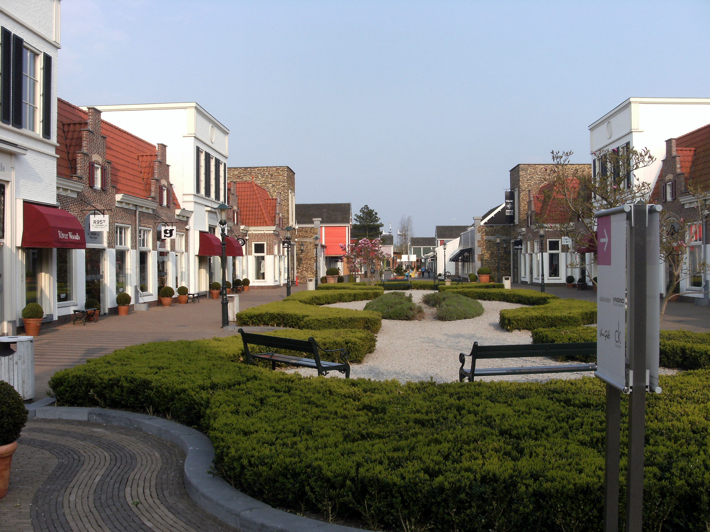
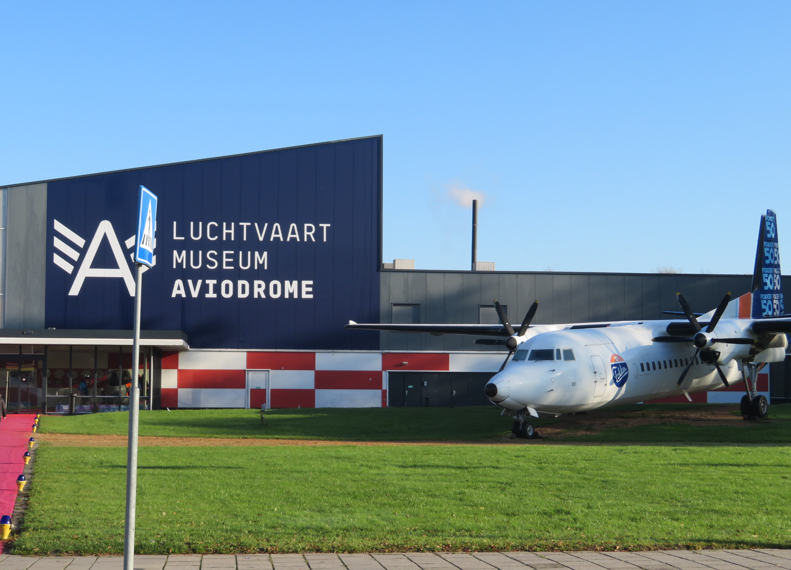

Onderstaand vijf feiten betreffende lelystad:
Bataviastad
Batavia Stad Fashion Outlet is de eerste fashion 'outlet' (Factory outlet center) in Nederland, gelegen aan het Markermeer in Lelystad. De outlet is genoemd naar het schip de Batavia[bron?] uit 1628, waarvan een replica nabij is afgemeerd, bij de Bataviawerf. Het winkelcentrum is een imitatie van een vestingstad, compleet met een zware stadsmuur, drie stadspoorten, autovrije klinkerstraten en een reeks individuele houten winkelgebouwtjes met een quasi-authentieke architectonische uitstraling, deels geïnspireerd op Marken, deels op de West-Indische koloniën, waar de ‘Batavia’ als spiegelretourschip van de Vereenigde Oost-Indische Compagnie nooit geweest is.
Na de opening als eerste outlet centre in Nederland in 2001 is Batavia Stad Fashion Outlet in 2008 vergroot met een tweede en in 2009 met een derde fase. Met de uitbreidingen kwam Batavia Stad direct aan het Markermeer te liggen. De eerste fase alsmede de uitbreidingen zijn geïnitieerd en ontwikkeld door projectontwikkelaar Stable International uit Amersfoort. De uitbreidingen zijn ontworpen door Attika Architekten. In juni 2015 werd door VIA Outlets (eigenaar sinds 2014) opnieuw een grote uitbreiding aangekondigd, van 45 winkels met een vloeroppervlak van 5.500 m². Hiermee zou Batavia Stad 150 winkels gaan omvatten, met in totaal 31.000 m².
Er wordt dames-, heren- en kindermode, schoenen, lingerie, parfums en sport- en buitenkleding verkocht van ruim tweehonderdvijftig internationale merken. Verder worden er keukenmachines, allerhande potten en pannen, keukenaccessoires en serviesgoed verkocht.Er zijn meerdere horecagelegenheden, waaronder McDonald's, Starbucks, La Place, The Chocolate Company en Subway.
Luchtvaartmuseum Aviodrome
Luchtvaartmuseum Aviodrome is het grootste Nederlandse museum voor lucht- en ruimtevaart. Sinds 2003 is Aviodrome gevestigd bij Lelystad op de daar gelegen luchthaven.
Op de huidige locatie bij Lelystad beschikt het museum over drie gebouwen, waarin door middel van thema's wordt stilgestaan bij de Nederlandse luchtvaarthistorie: het hoofdgebouw, waar de meeste vliegtuigen te bezichtigen zijn en dat tevens beschikt over een restaurant en filmtheater. Daarnaast is er een volledig nagebouwde replica van het stationsgebouw van Schiphol uit 1928 en ten slotte een grote T2-hangar waarin de vliegende collectie van de Aviodrome zijn thuis heeft.
Bezoekers van Aviodrome hebben slechts beperkt toegang tot deze hangar. In het museumgebouw heeft het Nationaal Ruimtevaart Museum ook een expositie waar voorwerpen en satellieten van verschillende Nederlandse en internationale ruimtevaartprogramma's te zien zijn, zoals het reservevluchtexemplaar van de ANS-satelliet, een replica van de IRAS-satelliet en een mock-up van de Columbus ISS module.